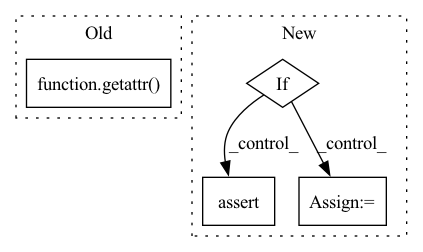

Pattern ID :41502
Before Change
self.features.add_module("gn", module=getattr(_model.head, "gn"))
self.features.add_module("relu", module=getattr(_model.head, "relu"))
self.pool: nn.AdaptiveAvgPool2d = getattr(_model.head, "avg")
final_layer: nn.Conv2d = getattr( _model.head, "conv")
self.classifier = self.define_classifier(conv_dim=final_layer.in_channels,
num_classes=self.num_classes, fc_depth=1)
After Change
model_name = name.split("_")[0].upper().replace("BIT", "BiT").replace("X", "x")
_model = KNOWN_MODELS[model_name](head_size=1)
self.features = nn.Sequential()
if "comp" in name:
assert "official" not in name, name
conv: StdConv2d = _model.root.conv
self.features.add_module("conv", conv3x3(conv.in_channels, conv.out_channels))
else:
self.features.add_module("conv", _model.root.conv)
if "official" not in name:
pool: nn.MaxPool2d = _model.root.pool
_model.root.pool = nn.MaxPool2d(pool.kernel_size, pool.stride, padding=1)
else:
self.features.add_module("pad", _model.root.pad)
self.features.add_module("pool", _model.root.pool)In pattern: SUPERPATTERN
Frequency: 3
Non-data size: 4
Instances Fragment ID: 116627967
Project Name: ain-soph/trojanzoo
Commit Name: 96331dcace5be2d405ccb32ac4b2ca5c7d028e0a
Time: 2021-04-30
Author: ain-soph@live.com
File Name: trojanvision/models/normal/bit.py
M Class Name: _BiT
N Class Name: _BiT
M Method Name: __init__(2)
N Method Name: __init__(2)
M Parent Class: _ImageModel
N Parent Class: _ImageModel
M File Name: trojanvision/models/normal/bit.py
N File Name: trojanvision/models/normal/bit.py
M Start Line: 19
M End Line: 32
N Start Line: 20
N End Line: 39
Before Change
self.decoder_opts = DecoderOptions(
args["beam"],
int(getattr( args, "beam_size_token", len(tgt_dict)) ),
args["beam_threshold"],
args["lm_weight"],
args["word_score"],After Change
self.unit_lm = getattr(args, "unit_lm", False)
if args["lexicon"]:
self.lexicon = load_words(args["lexicon"])
self.word_dict = create_word_dict(self.lexicon)
self.unk_word = self.word_dict.get_index("<unk>")
self.lm = KenLM(args["kenlm_model"], self.word_dict)
self.trie = Trie(self.vocab_size, self.silence)
start_state = self.lm.start(False)
for i, (word, spellings) in enumerate(self.lexicon.items()):
word_idx = self.word_dict.get_index(word)
_, score = self.lm.score(start_state, word_idx)
for spelling in spellings:
spelling_idxs = [tgt_dict.index(token) for token in spelling]
assert (
tgt_dict.unk() not in spelling_idxs
), f"{spelling} {spelling_idxs}"
self.trie.insert(spelling_idxs, word_idx, score)
self.trie.smear(SmearingMode.MAX)
self.decoder_opts = LexiconDecoderOptions(
beam_size=args["beam"],
beam_size_token=int(getattr(args, "beam_size_token", len(tgt_dict))),
beam_threshold=args["beam_threshold"],
lm_weight=args["lm_weight"],
word_score=args["word_score"],
unk_score=args["unk_weight"],
sil_score=args["sil_weight"],
log_add=False,
criterion_type=self.criterion_type,
)
if self.asg_transitions is None:
N = 768
// self.asg_transitions = torch.FloatTensor(N, N).zero_()
self.asg_transitions = []
self.decoder = LexiconDecoder(
self.decoder_opts,
self.trie,
self.lm,
self.silence,
self.blank,
self.unk_word,
self.asg_transitions,
self.unit_lm,
)
else:
assert args.unit_lm, "lexicon free decoding can only be done with a unit language model"
from flashlight.lib.text.decoder import LexiconFreeDecoder, LexiconFreeDecoderOptions
d = {w: [[w]] for w in tgt_dict.symbols}
self.word_dict = create_word_dict(d)
self.lm = KenLM(args.kenlm_model, self.word_dict)
self.decoder_opts = LexiconFreeDecoderOptions( Fragment ID: 116627975
Project Name: open-speech-ekstep/vakyansh-wav2vec2-experimentation
Commit Name: ea475ace163f4cc82e00481c41a6c9bfca552f0c
Time: 2021-04-28
Author: Harveen
File Name: utils/inference/single_file_inference.py
M Class Name: W2lKenLMDecoder
N Class Name: W2lKenLMDecoder
M Method Name: __init__(3)
N Method Name: __init__(3)
M Parent Class: W2lDecoder
N Parent Class: W2lDecoder
M File Name: utils/inference/single_file_inference.py
N File Name: utils/inference/single_file_inference.py
M Start Line: 117
M End Line: 168
N Start Line: 170
N End Line: 242
Before Change
if hasattr(self, check_criterion):
To run config check for criterion, make corresponding function name
(e.g. HintonKLD -> HintonKLD)
getattr( self, check_criterion) (self.config["CRITERION_PARAMS"])
def HintonKLD(self, config: Dict[str, Any]) -> None:
Check HintonKLD Criterion params.After Change
// Run criterion config check
params: Dict[str, Any] = self.config["CRITERION_PARAMS"]
if self.config["CRITERION"] == "HintonKLD":
assert "T" in params
assert params["T"] > 0.0
assert isinstance(params["T"], float)
assert "alpha" in params
assert 0.0 <= params["alpha"] <= 1.0
assert isinstance(params["alpha"], float)
// check additional params(teacher) exist
assert "teacher_model_name" in params
assert isinstance("teacher_model_name", str)
assert "teacher_model_params" in params
assert "crossentropy_params" in params
// Hintonloss contains crossentropy
ce_params = params["crossentropy_params"]
elif self.config["CRITERION"] == "CrossEntropy":
ce_params = self.config["CRITERION_PARAMS"]
if ce_params:
assert "num_classes" in ce_params Fragment ID: 116627965
Project Name: j-marple-dev/model_compression
Commit Name: 55cbca4f89999f9502b15ef2d1ab36f04802a625
Time: 2020-07-05
Author: hoonyyhoon@snu.ac.kr
File Name: config/config_validator.py
M Class Name: TrainConfigValidator
N Class Name: TrainConfigValidator
M Method Name: check_criterion(1)
N Method Name: check_criterion(1)
M Parent Class: ConfigValidator
N Parent Class: ConfigValidator
M File Name: config/config_validator.py
N File Name: config/config_validator.py
M Start Line: 115
M End Line: 130
N Start Line: 117
N End Line: 152